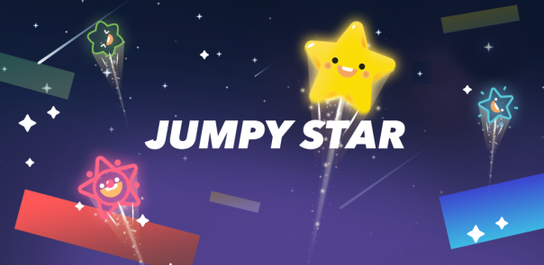

Jumpy Star (Block Games, 2019)
"별의, 별에, 별을 위한."
Jumpy Star 는 화면을 탭하여 별을 하늘 저 높은 곳까지 올려보내는 것이 목표인 캐주얼 점프 게임입니다.
그저 한 손가락으로 화면을 탭하는 것으로, 플레이어는 언제까지고 하늘 저 높은 곳으로 올라갈 수 있습니다.
(떨어지거나 가시를 밟지만 않는다면요.)
<게임 시놉시스>
빛나는 별과 함께 점프해보세요! 그저 화면을 탭하기만 하면, 당신도 높이 날아오를 수 있습니다!
* 쉽고 간편한 조작! 화면을 지긋이 누르기만 하면 높이 날아오를 수 있습니다.
* 은은한, 때로는 경쾌한 음악과 다채로운 빛의 밤하늘.
* 30여종의 귀엽고 아기자기한 캐릭터. 별을 모아 당신의 별을 골라보세요!
* 60개 이상의 다양한 클래식 스테이지, 그리고 점프 실력을 뽐낼 수 있는 무한 모드!
* 매일 주어지는 일일 보상으로 새로운 별을 획득할 수도 있습니다!
<비고>
- Jumpy Star 는 Unity 엔진으로 제작되었으며, Baidu 의 글로벌 게임 그룹인 DO Global Games 와의 협업에 해당합니다.
- 홍보 및 마케팅, 배포 등을 제외한 주요 게임 제작 및 리소스 외주 등은 1인 개발로 진행하였습니다.
그저 한 손가락으로 화면을 탭하는 것으로, 플레이어는 언제까지고 하늘 저 높은 곳으로 올라갈 수 있습니다.
(떨어지거나 가시를 밟지만 않는다면요.)
<게임 시놉시스>
빛나는 별과 함께 점프해보세요! 그저 화면을 탭하기만 하면, 당신도 높이 날아오를 수 있습니다!
* 쉽고 간편한 조작! 화면을 지긋이 누르기만 하면 높이 날아오를 수 있습니다.
* 은은한, 때로는 경쾌한 음악과 다채로운 빛의 밤하늘.
* 30여종의 귀엽고 아기자기한 캐릭터. 별을 모아 당신의 별을 골라보세요!
* 60개 이상의 다양한 클래식 스테이지, 그리고 점프 실력을 뽐낼 수 있는 무한 모드!
* 매일 주어지는 일일 보상으로 새로운 별을 획득할 수도 있습니다!
<비고>
- Jumpy Star 는 Unity 엔진으로 제작되었으며, Baidu 의 글로벌 게임 그룹인 DO Global Games 와의 협업에 해당합니다.
- 홍보 및 마케팅, 배포 등을 제외한 주요 게임 제작 및 리소스 외주 등은 1인 개발로 진행하였습니다.
Sceenshots